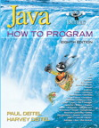
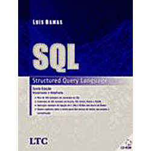

|  |
Esta edição traz uma abordagem baseada na introdução
antecipada a classes e objetos, logo no início do livro. 'Java -
Como programar' inclui cobertura de programação orientada a objetos
em Java e vários estudos de caso integrados, como a classe Time
(três seções do Capítulo 8), a classe Employee (capítulos 9 e 10),
a classe GradeBook (capítulos 3-5 e 7), o estudo de caso opcional
sobre um sistema de caixa eletrônico (ATM) baseado em projeto
orientado a objetos e em UML (capítulos 1-8 e 10), o estudo de caso
de imagens gráficas e GUI (capítulos 3-12), o aplicativo de troca
instantânea de mensagens DeitelMessenger (capítulo 24) e duas
aplicações Web de múltiplas camadas, baseadas em banco de dados -
Online Survey (capítulo 26) e Guest Book (capítulo 27). |
|
Aprenda a desenvolver softwares profissionais com este guia
completo que ensina a organizar a implementação e reduzir problemas
durante o desenvolvimento de um software. Este guia abrange: -
métodos e processos nos MIDDS - método interativo e documentado de
desenvolvimento de software - modelagem de software com UML
|
 |
Esta obra aborda a questão do acesso a bancos de dados
através da linguagem SQL - um padrão internacional. Os assuntos são
apresentados recorrendo a vários exemplos de comandos que são
explicados com o detalhes. Nesta edição foram adicionados quatro
capítulos que permitem ao leitor uma visão geral sobre o contexto em
que se inserem os bancos de dados e os sistemas de informações,
particularmente os vários modelos de bancos de dados, projeto de
bancos de dados e normalização.
|